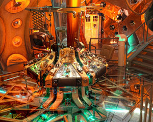
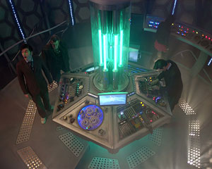
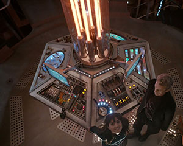

The TARDIS Interior
The TARDIS interior on the whole remained pretty consistent for the first 26 years. Recently there have been more dramatic changes with a range of different ideas and styles.
The TARDIS interior on the whole remained pretty consistent for the first 26 years. Recently there have been more dramatic changes with a range of different ideas and styles.
Series One
Series Five
Series Seven
Series Eight